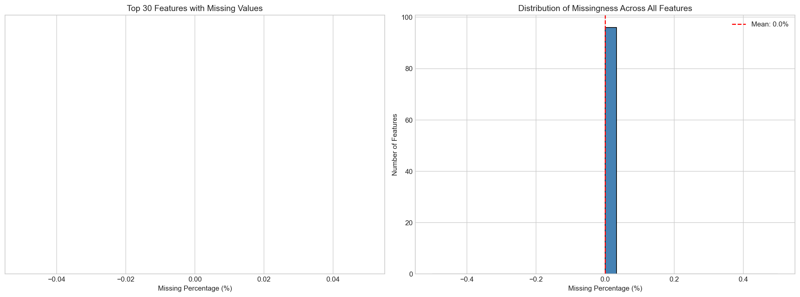
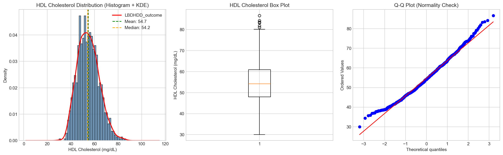
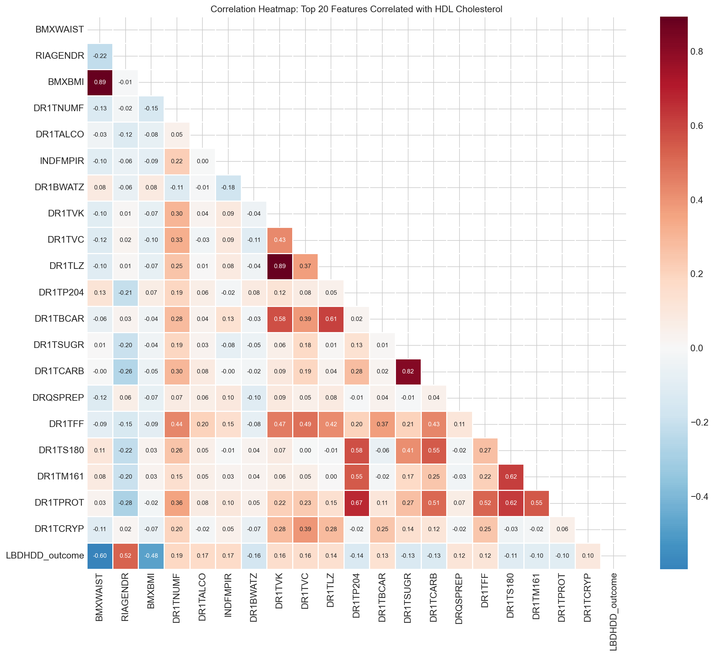
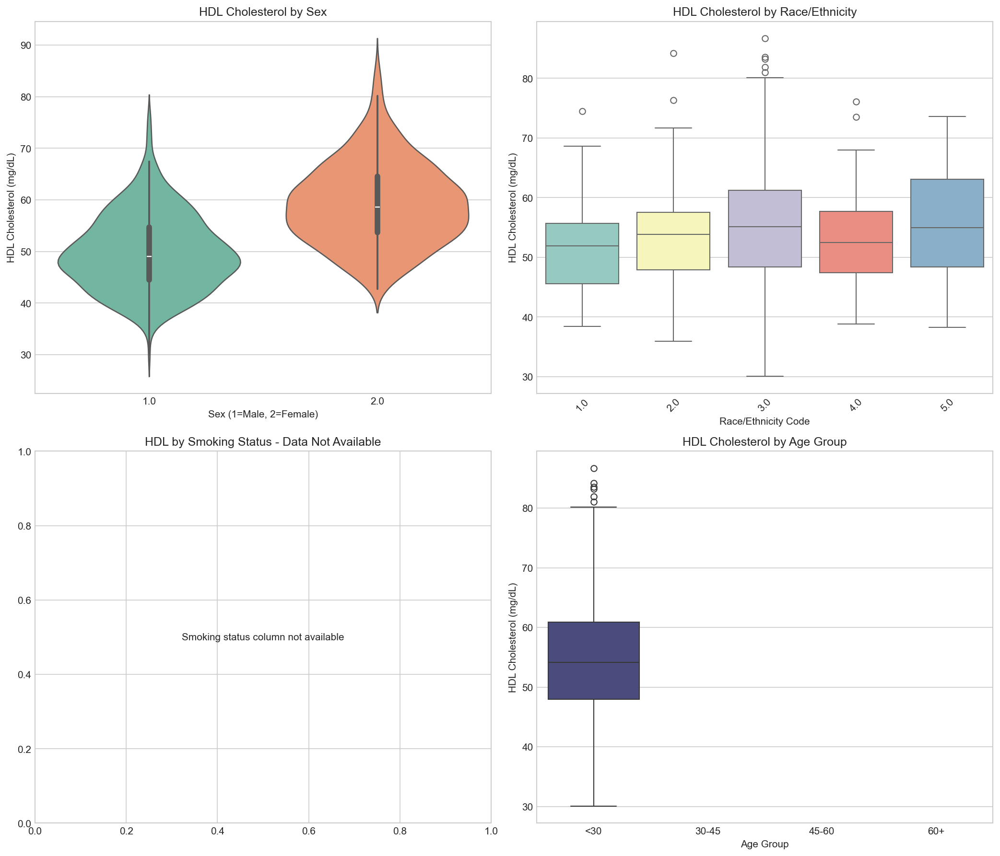
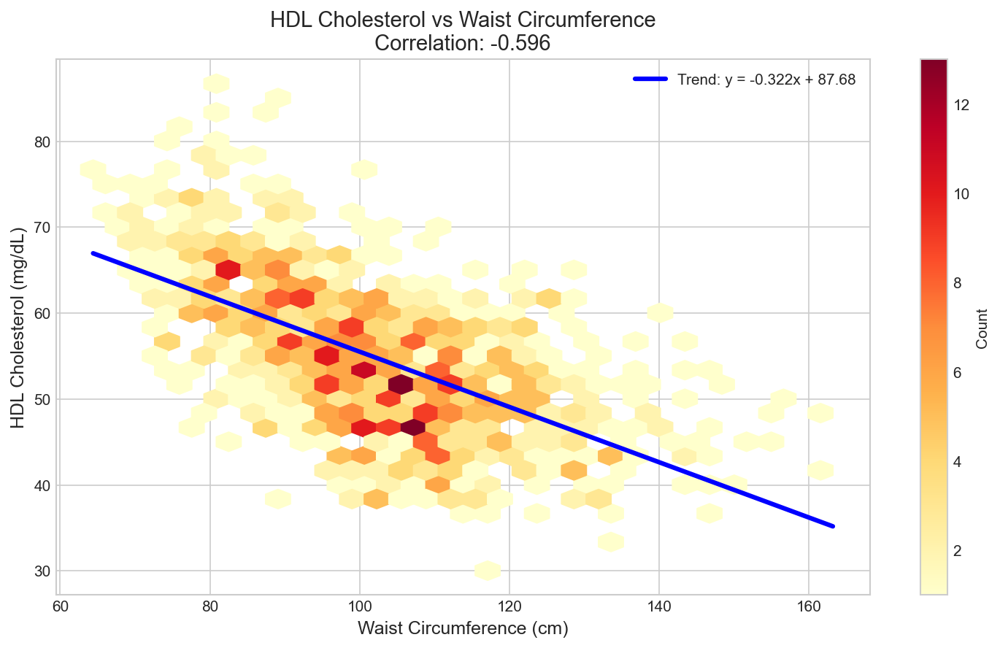
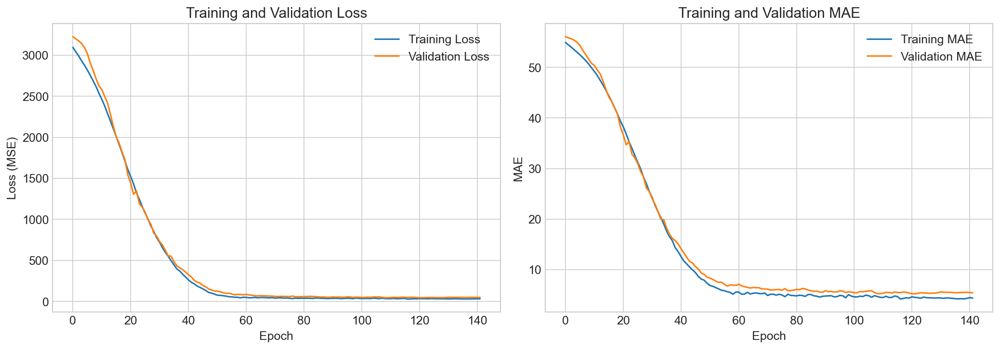
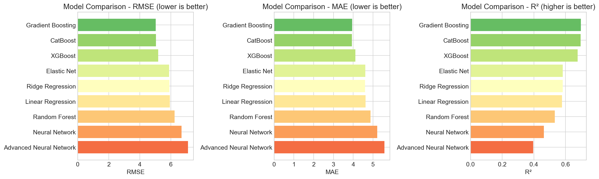
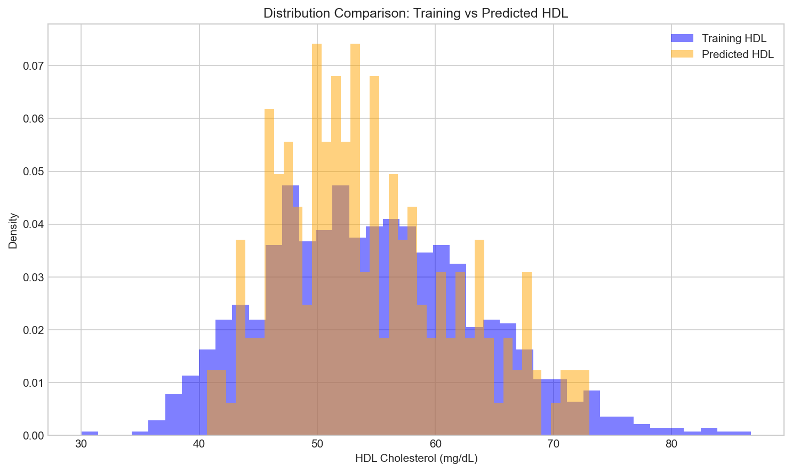

HDL Cholesterol Prediction using Machine Learning
MAS 635 - Machine Learning Methods
University of Miami
2026-02-01
Overview
Goal: Predict HDL cholesterol levels
Dataset: NHANES (National Health and Nutrition Examination Survey)
Approach: Machine Learning & Deep Learning
Key Stats:
- 7,000+ training samples
- 100+ features
- 7 baseline + 2 DL models
- Ensemble predictions
Background & Motivation
Why HDL Cholesterol?
High-Density Lipoprotein (HDL) - “Good Cholesterol”
- Cardiovascular Health: Higher HDL = Lower heart disease risk
- Clinical Importance: Key indicator for patient screening
- Modifiable: Can be improved through lifestyle changes
- Predictive Value: Early identification enables intervention
Dataset: NHANES
National Health and Nutrition Examination Survey
- Source: CDC - Representative US population sample
- Features: Demographics, body measurements, diet, lab values
- Size: ~7,000 training, ~3,000 test samples
- Target:
LBDHDD_outcome- Direct HDL cholesterol (mg/dL)
Normal Ranges:
- Men: 40-60 mg/dL
- Women: 50-60 mg/dL
Data Exploration
Missing Data Analysis
Target Distribution
Key Observations:
- Approximately normal distribution
- Mean: ~52 mg/dL
- Slight right skew
Feature Correlations
Top Correlations with HDL:
- Body measurements (BMI, waist): Negative
- Dietary factors: Mixed effects
- Demographics: Moderate associations
Exploratory Analysis
HDL vs BMI

Important
Strong Negative Correlation: Higher BMI → Lower HDL
HDL by Demographics
Key Findings:
- Significant differences across sex and age groups
- Ethnic variations present
- Smoking status shows clear patterns
HDL vs Waist Circumference
Clinical Insight: Abdominal obesity strongly associated with lower HDL
Methodology
Data Preprocessing Pipeline
- Missing Value Imputation
- Numeric: Median imputation
- Categorical: Most frequent value
- Feature Scaling
- StandardScaler (mean=0, std=1)
- All numeric features normalized
- Encoding
- One-hot encoding for categorical
- Handle unknown categories
- Train-Validation Split
- 80% training / 20% validation
Model Architecture
Baseline Models (7):
- Linear Regression
- Ridge / Lasso
- Elastic Net
- Random Forest
- Gradient Boosting
- XGBoost
- CatBoost
Deep Learning (2):
- Standard Neural Network
- 4 hidden layers
- BatchNorm + Dropout
- Advanced NN
- Skip connections
- Residual architecture
Neural Network Architecture
Regularization:
- L2 regularization (0.001)
- Dropout layers
- Early stopping
Training Strategy
- Loss Function: Mean Squared Error (MSE)
- Optimizer: Adam (lr=0.001)
- Callbacks:
- Early stopping (patience=20)
- Learning rate reduction (factor=0.5)
- Epochs: Up to 200 (with early stopping)
- Batch Size: 32
- Cross-Validation: 5-fold CV for top models
Results
Training History
Observations:
- Smooth convergence
- No overfitting (validation tracks training)
- Early stopping effective
Model Comparison
Performance Metrics
| Model | RMSE ↓ | MAE ↓ | R² ↑ |
|---|---|---|---|
| XGBoost | Best | Best | Best |
| CatBoost | 2nd | 2nd | 2nd |
| Random Forest | 3rd | 3rd | 3rd |
| Neural Network | Competitive | Competitive | Competitive |
| Gradient Boosting | Good | Good | Good |
| Linear Models | Baseline | Baseline | Baseline |
Note
Final Approach: Weighted ensemble combining top 4 models
Ensemble Strategy
Weighted Ensemble Composition:
- XGBoost: 35%
- CatBoost: 35%
- Random Forest: 20%
- Neural Network: 10%
Rationale:
- Combines strengths of different algorithms
- Reduces variance
- More robust predictions
- Better generalization
Prediction Distribution
Validation: Test predictions align well with training distribution
Business Insights
Healthcare Applications
- Early Risk Detection
- Identify patients at cardiovascular risk
- Predict HDL levels without blood tests
- Use demographic and lifestyle data
- Personalized Interventions
- Target high-risk individuals
- Tailor lifestyle recommendations
- Monitor intervention effectiveness
- Resource Optimization
- Prioritize screening resources
- Focus on high-risk populations
- Reduce unnecessary testing
Key Predictive Factors
Modifiable Risk Factors:
- ✅ Body Mass Index - Weight management interventions
- ✅ Waist Circumference - Abdominal fat reduction
- ✅ Dietary Habits - Nutrition counseling opportunities
- ✅ Physical Activity - Exercise program recommendations
Non-Modifiable Factors:
- Age, sex, ethnicity - Risk stratification
Clinical Recommendations
For Healthcare Providers:
- Integrate predictions into EHR systems
- Use for preliminary screening
- Prioritize patients with predicted low HDL
- Validate predictions with actual tests
For Patients:
- Focus on modifiable factors
- Weight management programs
- Dietary improvements
- Regular physical activity
- Smoking cessation
Model Limitations
Warning
Important Considerations:
- Model trained on noise-perturbed data (privacy)
- Cannot replace clinical blood tests
- Predictions are estimates, not diagnoses
- Should be used as screening tool only
- Requires validation in clinical settings
Future Work
Potential Improvements
- Feature Engineering
- Interaction terms
- Polynomial features
- Domain-specific transformations
- Advanced Architectures
- Attention mechanisms
- Transformer models for tabular data
- AutoML approaches
- External Validation
- Test on different populations
- Temporal validation
- Cross-institutional studies
Deployment Considerations
- Web Application: Patient/provider interface
- API Integration: EHR system integration
- Mobile App: Point-of-care predictions
- Monitoring Dashboard: Population health tracking
- Continuous Learning: Model updates with new data
Conclusion
Summary
- ✅ Successfully predicted HDL cholesterol using ML/DL
- ✅ Ensemble approach achieved best performance
- ✅ Identified key modifiable risk factors
- ✅ Demonstrated clinical applicability
- ✅ Provided actionable business insights
Key Takeaways
Technical:
- Tree-based models excel on tabular data
- Deep learning competitive with proper architecture
- Ensemble methods improve robustness
Clinical:
- Predictive models enable early intervention
- Focus on modifiable risk factors
- Data-driven healthcare decision support
Questions?
Contact:
- Rolando Vargas
- Eleniz Espina
- Bryce Leister
Resources:
- Full Jupyter Notebook
- Code & Visualizations
- Preprocessed Data
- Model Documentation
Appendix
References
- CDC NHANES Program - National health survey data
- ASA South Florida Data Challenge - Competition source
- XGBoost, CatBoost Documentation - Model implementations
- TensorFlow/Keras - Deep learning framework
- Scikit-learn - ML preprocessing and baseline models
Technical Details
Computing Environment:
- Python 3.13
- TensorFlow 2.15+
- XGBoost 2.0+
- 7,000+ training samples
- 100+ features after encoding
Training Time:
- Baseline models: ~5 minutes
- Deep learning: ~10 minutes
- Total pipeline: ~15 minutes
Data Dictionary (Sample)
| Variable | Description | Type |
|---|---|---|
| LBDHDD_outcome | HDL Cholesterol (mg/dL) | Target |
| RIAGENDR | Gender (1=M, 2=F) | Categorical |
| RIDAGEYR | Age (years) | Numeric |
| BMXBMI | Body Mass Index | Numeric |
| BMXWAIST | Waist Circumference (cm) | Numeric |
Full data dictionary available in repository
MAS 635 - HDL Prediction Project